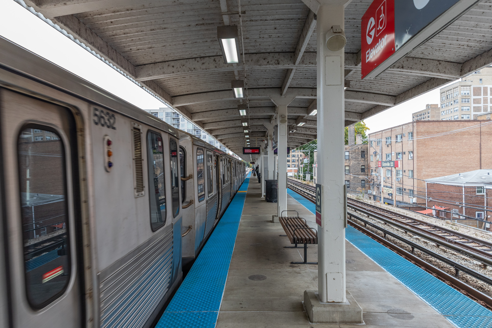

The Windy City is one of the few major cities with urban rapid train networks that run primarily above ground. For Chicago residents, the network provides much needed connection. But get too close and you won't hear the end of it (literally).
Dylan Moring has always wanted to live in a high-rise building. After college, the 33-year-old spent time living in both Boston and Denver, but it wasn't until he moved to Chicago that his dream could come true. Thanks, in no small part, the Chicago Transity Authority's train system.
The CTA system, unlike urban rail networks in nist other major cities runs mostly above ground.

EDIT ME: paragraph continuing the story after the map tour -- what the five stops added up to, a resident's account, policy context, whatever comes next.
EDIT ME: closing paragraph.